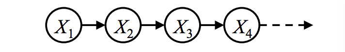
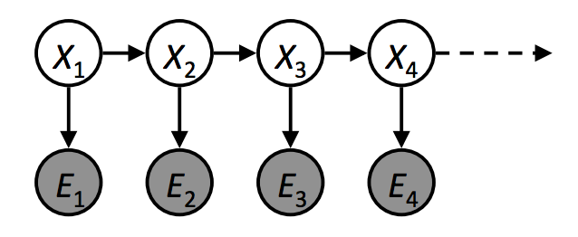
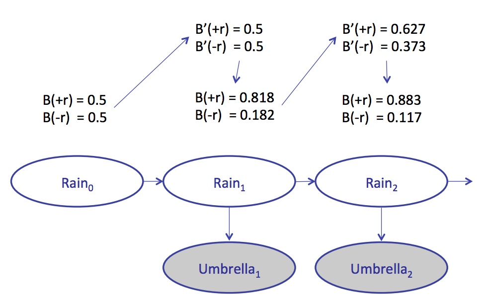

The idea of Hidden Markov Model (HMM) is developed based on Markov Model. HMM is used when the system being modeled is assumed to be a Markov process with unobserved (hidden) states.
So, let us talk a little bit about simple Markov Model first before we dig into HMM.
One typical example of Markov Model is the Markov Chain. A Markov Chain is a random process that undergoes transitions from one state to another on a state space. It must possess a property that is usually characterized as "memoryless": the probability distribution of the next state depends only on the current state and not on the sequence of events that preceded it, which can be shown as:
$$P(X_t|X_{t-1}, X_{t-2}... X_1) = P(X_t|X_{t-1})$$
A Markov Chain can be graphically represented as:
Where $X_1$, $X_2$, $X_3$... are called the state.
It has the following parameters:
Suppose we want to estimate weather. Build a model that each day's weather is depended on the previous day's weather. Also, in order to simlify the problem, we assume there are only two types of weather: sun and rain. In this way, the initial distribution is the first day's weather, and the transition probability is the relation between 2 consecutive days' weather.
Firstly, let us consider a simple condition with the following default paramerters:
Now a completed model has been built up, so we can do the mathematical simulation.
The probability distribution after one step: $$P(X_2 = sun) = P(X_2 = sun|X_1 = sun)P(X_1 = sun) + P(X_2 = sun|X_1 = rain)P(X_1 = rain)$$ $$ = 0.9 * 1.0 + 0.3 * 0.0$$ $$ = 0.9$$ $$P(X_2 = rain) = P(X_2 = rain|X_1 = sun)P(X_1 = sun) + P(X_2 = rain|X_1 = rain)P(X_1 = rain)$$ $$ = 0.1 * 1.0 + 0.7 * 0.0$$ $$ = 0.1$$
Similiarly, we can apply this algorithm to further days and then get their weather condition probability distributions, here is a example for the first 5 days:
| Day 1 | Day 2 | Day 3 | Day 4 | Day 5 | |
| Sun | 1 | 0.9 | 0.84 | 0.804 | 0.7824 |
| Rain | 0 | 0.1 | 0.16 | 0.195 | 0.2176 |
In addition to the simple case, this problem can be visulized by setting different parameters and the number of steps (days):
According to the graph, the probability distribution will converge to the transition probability no matter what the initial distribution is.
However, in real life, markov chain is not very useful for most of the problems since there always have some hidden states such that people cannot get their exact distribution. In this case, we are trying to find some other patterns that are able to observe and have relation with the hidden states. Then, at each time step, use the observation to update the beliefs.
A typical HMM's graphical representation is a markov chain plus an observer $E_i$ to each state $X_i$:
The parameters for HMMs are:
The process of an HMM is based on simple Markov models. In addition to each transition update, which is what we have done in the previous weather example, it has another emission update that modifies the distribution of $P(X_i)$ according to $E_i$.
Continue with the weather problem above. All the existing assumptions stay the same. But this time we keep staying in a building so we are not able to look at the weather outside. However, we still have a piece of clue--there is a person who comes to the building everyday and he is more likely to carry an umbrella when it is rainy. Therefore we can use if the person carries umbrella (+u, -u) as an observer to predict if the weather is rainy (+r, -r).
Similiar to the Markov Chain problem, let us firstly consider a simple setup of these default parameters:
Now the problem setup is complete. According to the "Transition update-Emission update-Transition update..." rule, the beliefs changed in the following way:
There is also a visualizer for this problem in general cases. Determine all the parameters and then it will give a correspounding simulation: